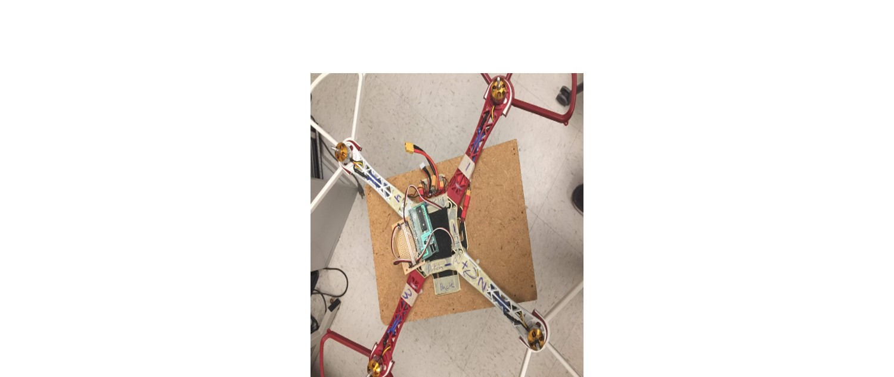
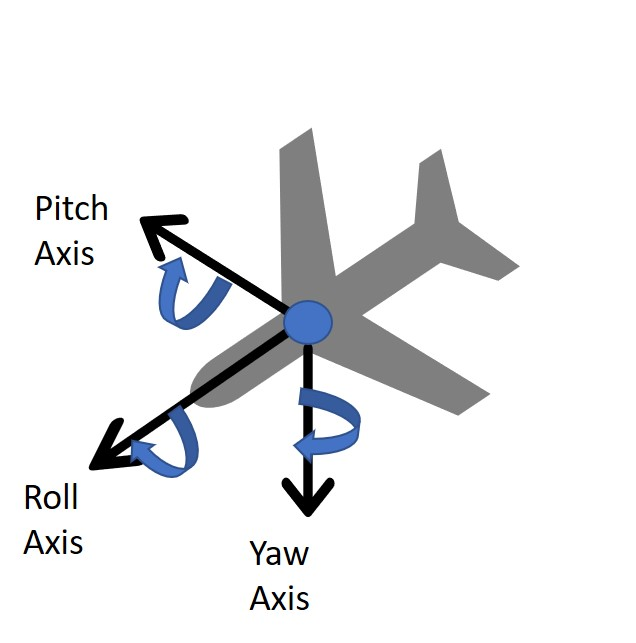

Labhansh Aritwal la375
Adrian Dohmann ahd59
Kenneth Huaman kch95
Vini Tripathii ut33
INTRODUCTION
We created a 3 rotational degree of freedom quadcopter frame. The result was so that when placed on the small surface area of roughly a finger tip, the quadcopter can maintain its stability and recover from perturbations. The four motors increase and decrease in speed according the size and direction of the disturbance so as to minimize the oscillations of the quadcopter frame. The original goal of this project was to create a drone that could hover, but due to safety constraints, we were unable to obtain the necessary control values for the height (the Z-axis) and pivoted to a quadcopter that could self-stabilize in pitch and roll. The main components of this project are the microcontroller (PIC32), ESC’s (electronic speed controllers), motors and two Android phones. One Android sensor acted as a Bluetooth remote and was mainly relevant during the tuning process, the second phone acted as a receiver and sensor. We used the Android sensor, compass orientation, to detect absolute angle orientation with respect to pitch, roll and yaw. (The compass orientation sensor is a software sensor that combines information from the geomagnetic field and accelerometer hardware sensor in the phone to computer the phone’s angle orientation.) The control algorithm used in this project was PID.
High Level Design
Origin of Idea
It was something that Labhansh came up and we were really thrilled to hear the whole concept. It felt different and unique, and we didn’t know if it would work but we still wanted to do it because it was a fun experiment.
Labhansh - “I came up with this idea 2 years back when I first heard about drones particularly quadcopters. Until then I never knew about them. It didn’t take me much time to find out how they work, specially the part where they use sensors like Accelerometer, Gyroscope, Camera etc etc. It was common knowledge at that time that even the new smartphones are coming with these sensors. So, it just struck me that why not use a phone on the drone. Why to take such a pain to integrate all the sensors when there is a centralized integrated solution in the market (Smartphone). And with that this idea was born”
Background Math
For this project, we worked with Euler Angles. The choice came down to this or using Quaternions to represent 3d rotations. We chose Euler Angles because of the familiarity and since the phone could precalculate absolute orientation with respect to Euler Angles.
The basic setup is a standard right- hand rule axis, with x lying parallel to the length of the vehicle and positive in a forward direction, y lying parallel to the width and positive to the right(assuming a top down, front first image), and the z axis facing directly down towards the earth. Pitch, Roll, and Yaw therefore correspond to right-hand curls along the y, x, and z axes respectively. This setup allows us to create parallels for the x- quadcopter to the single DOF motor from lab 4.
 Figure BM1: To the left can be seen an example of the euler angle scheme for a plane. To the right can be seen a top down view of our quadcopter with the arms labeled as mentioned
Logical Structure
Origin of Idea
Remote Transmitter Smartphone
Smartphone + Drone
Acoustic Team
Priya and Vini worked on the acoustic functionalities.
Assembling the microphone circuit.
- 1 Arduino Uno
- Electret microphone
- 1 µF capacitor, 6.8µF capacitor
- various resistors
- LM358 Op Amp
- Various wires

We first connected the microphone to the arduino using the diagram above as reference. We used a 3.24KΩ Resistor and a 1µF Capacitor. We connected the output to pin A1.
In Arduino the ADC clock is preset to 16 MHz/128 = 125 KHz (though the sampling rate can be increased). Each conversion in AVR takes 13 ADC clocks so so the equivalent frequency is 125 KHz /13 = 9615 Hz. The ‘start’ is signaled by 660Hz, so analogRead is sufficient to fulfill the Nyquist Criteria which requires that the sampling frequency is at least twice the highest frequency component to avoid aliasing. The frequency of the human speech 85-180 Hz for males and 165-255 for females, and so should not interfere with sensing the start signal.
We hooked up the function generator to the Input of the circuit to test which bin the 660Hz signal would fall in.
We used the following code, modified from Team Alpha, to collect values:
void setup() {
Serial.begin(115200); // use the serial port
}
void loop() {
while(1) {
cli();
for (int i = 0 ; i < 512 ; i += 2) {
fft_input[i] = analogRead(A1);
fft_input[i+1] = 0;
}
fft_window();
fft_reorder();
fft_run();
fft_mag_log();
sei();
Serial.println("start");
for (byte i = 0 ; i < FFT_N/2 ; i++) {
Serial.println(fft_log_out[i]);
}
}
}

The 660Hz input from the function generator peaked at bin 20, whereas the 500Hz signal peaked at bin 15 and the 750Hz signal peaked at bin 22. This shows that the circuit can decipher between signals that are close together.
We also see peaks at bins 1 and 2 for all signals, due to DC values at the input. Since these are consistent for all frequencies, we can ignore these peaks.

We then added the above amplifier circuit, from Team Alpha, as recommended by the TA’s.
The exact resistor values are: 328Ω, 3.24kΩ, 391kΩ, 9.85kΩ, 9.8kΩ

We then tested the microphone with a 660Hz tone being played, instead of directly inputting a signal from the function generator. We collected the values using the same code as before. As seen in the graph above, without the amplifier the 660Hz tone blends in with the other signals. With the amplifier connected, we can see a peak at bin 20, which is where we saw the 660Hz peak with the function generator. There are also peaks at bin 39 and 58, most likely due to background noise in the lab. This shows that the circuit is successful in amplifying the 660Hz value above noise, and can identify the 660Hz tone based on which bin it appears in (bin 20).